The question this tool answers: rev-B needs parts that rev-A's copper has no room for. Where can they go without tearing up copper that already shipped, and what has to move to make room? The engine treats the board like a bag of chips being settled: every part, trace node, via and unborn part is a unit that moves only as far as the design rules allow, pressure propagates through the packing, trace lengths act as springs with hard caps, and the one gate that must always pass is real KiCad DRC on every board the engine emits.
enc_corner_wide: 309 cycles, progress 1.0, 7/7 ghosts born, 5 parts moved, gate 13/13, check_sync True
enc_corner: 499 cycles, progress 0.6491, 3/7 ghosts born, 19 parts moved, gate 14/14, check_sync True
power_squeeze: 500 cycles, progress 0.7418, 112 parts moved, gate 12/12, check_sync True
Branch lean-jiggle, rules 0.10/0.10, region of the encoder corner (left 20 mm of the board) with the F side and the
connectors locked. Code: hardware/tools/settle/. Per-run detail pages: enc_corner_wide,
enc_corner, power_squeeze.
prep.py reads the board and one JSON config and builds a region-scoped model. A part is movable when its pad centroid
is inside the region and it is not locked (by reference, side, or rectangle). Every track or via whose segment intersects the region
and whose net is not locked becomes dynamic copper: a graph of nodes (track endpoints and vias) and edges (one per original segment).
An endpoint that lies on a pad is bound to that pad: if the part is movable the node rides with it, otherwise it is fixed.
An endpoint that meets copper outside the region, or copper that stays static, is pinned so a junction can never open.
Everything else within a 3 mm halo of the region is a static obstacle: pads at their true polygons with local clearances, tracks, vias.
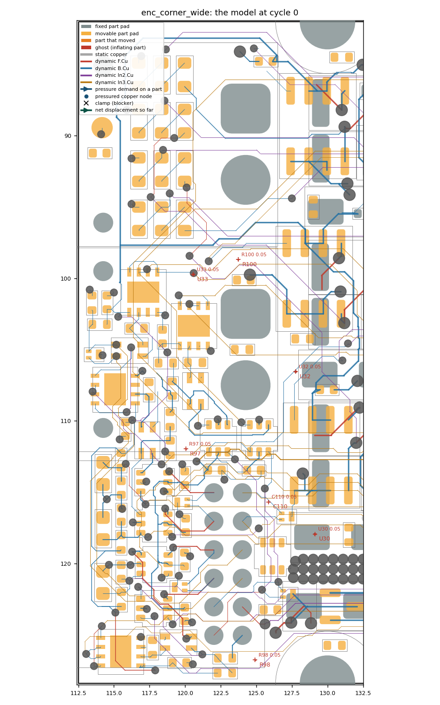
The parts to be born are ghosts: the real footprint placed at its target pose, its pads and courtyard scaled about the pad centroid by a factor g that starts at 0.05 and must reach 1. A ghost's pads carry no net while it inflates, so every pair it forms is a clearance pair; nothing may be inside it when it is full size.
The site matters more than any amount of force. With at: "search" the model rasterizes the ghost's side at 0.1 mm
(pads and courtyards weight 1, copper that can be pushed 0.3), then scores every candidate centre within a radius of the partner-pad
centroid by the obstruction under the footprint's courtyard box plus 0.03 per mm of distance, and takes the minimum. Placed ghosts are
stamped into the raster so later ghosts avoid them. At 8 mm radius four of the seven parts were seeded into the dense switch fabric and
never got out; at 14 mm all seven found pockets.
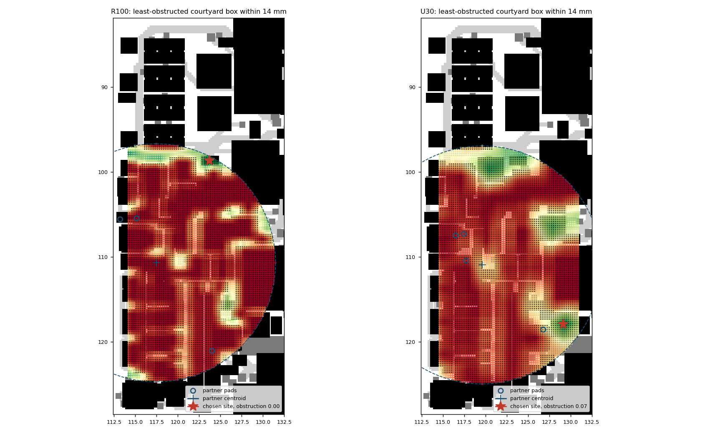
Every pair of objects that could interact has a margin: its distance minus the clearance the rules demand. Track-track, track-via, track-pad, via-via, pad-pad, hole-to-copper and hole-to-hole pairs use true pad polygons, netclass clearances with max semantics, per-pad local overrides, the board outline (centreline plus the corner arcs) and courtyards. Pad polygons are keyed per edge, because within one straight edge the model is exact and the polygonization bias only jumps between edges.
A move is admissible when every margin stays above its floor. The floor is the rule plus a 15 µm guard for pairs that had room on the shipped board, and the shipped margin itself for pairs the shipped board carried tighter than that: proof by shipping. Same-net contacts (a stub ending on a pad, a T junction) are held as attachments: at least one contact point of the pair must survive every move, so a part cannot slide off its own copper. GND is exempt because the pour reconnects it.
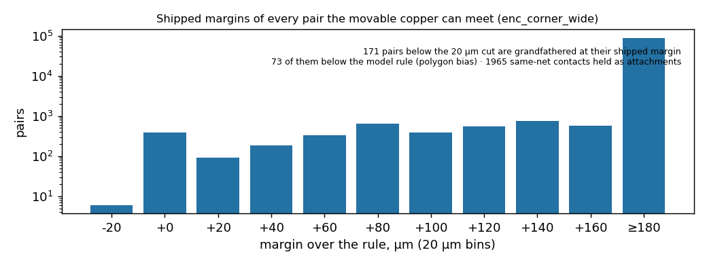
Two rules keep the engine honest on an imperfect start. Non-worsening: a pair that is already below its floor (a pre-existing overlap, or a ghost speck born on top of a trace) is admissible as long as the move does not reduce its margin. Ghost pairs are never grandfathered: a ghost only ever grows into legal room; the copper under it has to leave first.
Each unit proposes a step of at most 0.05 mm (for a ghost: 0.05 mm at its perimeter). The engine evaluates every margin at the full step; if all pass the step is taken. Otherwise the failing pairs are the clamps, and a bisection finds the largest fraction α whose margins all stay above floor. α = 0 means the unit waits. Because a step is far below any rule corridor, endpoint feasibility is sufficient: nothing can tunnel through a trace between two admissible positions.
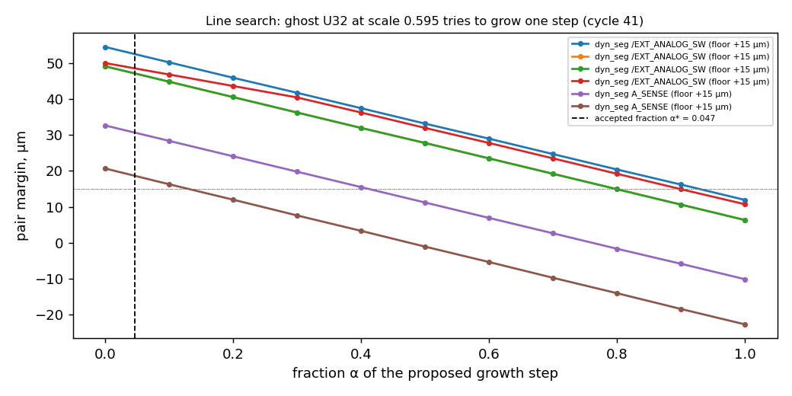
A ghost that could only take a fraction of its step deposits pressure on what stopped it: the displacement each blocker would need, directed away from the ghost's centre. A copper node receives it directly; a node bound to a part hands it to the part; a courtyard clamp goes to the part. If the blocker is unmovable (a locked part's pad, the board edge) the demand is absorbed and counted, and the ghost gets a push-back so it slides off walls toward open space. A ghost also feels a weak spring back to its site.
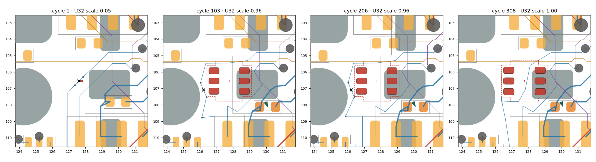
Parts move by the same rule. A part's drive is its target term (if it has one), the pressure it accumulated this cycle, and the tension of its own copper; it is line-searched over all of its pads, its bound copper, its courtyard, the outline and the length caps of every net it touches. Blocked parts deposit pressure on their blockers in turn, so a packed corridor creeps like a traffic jam instead of shearing. Mutually wedged units are detected from the clamp graph and stepped jointly, and declared rigid groups always move as one.
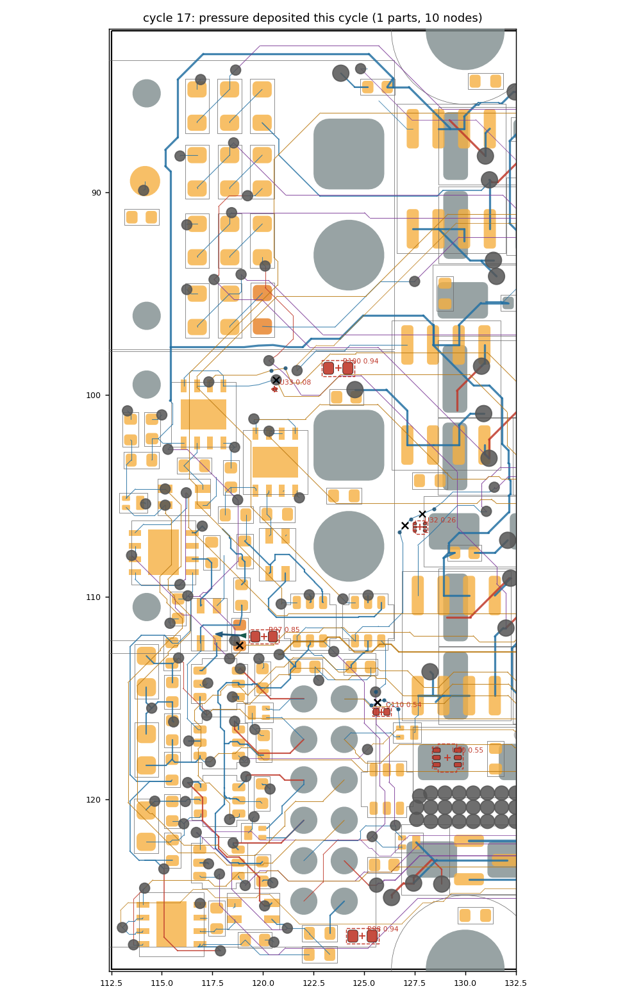
After the units, the copper pass: pressured nodes yield as far as their own floors allow, sub-segments longer than 1.3 mm are pulled straight, and nodes of nets over their allowance are pulled toward their neighbours.
For every net the engine tracks the copper length inside the region. Growth beyond an allowance (max(allow·L, allow_mm)) pulls the net's nodes toward their neighbours and its end parts toward their copper with stiffness k. Growth beyond a cap (max(cap·L, cap_mm)) enters the line search as one more margin, so no step can exceed it; a unit that would has to wait, and the cap shows up in the stall report by net name. The table is the tunable part:
| net pattern | k, allow, cap, allow_mm, cap_mm |
|---|---|
^GND | {"k": 0.0, "allow": 1000000000.0, "cap": 1000000000.0} |
^(VMOT|Vdrive|VBUS|\+3V3|\+1V1|\+5V_ISO|/V_ENC|/V_SW)$ | {"k": 0.2, "allow": 0.3, "cap": 1.0, "allow_mm": 1.0, "cap_mm": 6.0} |
^Net-\(U(1|6|7|12)-(HO|LO|VB)\)$ | {"k": 4.0, "allow": 0.0, "cap": 0.05, "allow_mm": 0.0, "cap_mm": 0.3} |
^/2[ABCD]G[HL]$ | {"k": 4.0, "allow": 0.0, "cap": 0.05, "allow_mm": 0.0, "cap_mm": 0.3} |
^Net-\(Q[1-4]-[BE]\)$ | {"k": 4.0, "allow": 0.0, "cap": 0.05, "allow_mm": 0.0, "cap_mm": 0.3} |
^Net-\((R(24|59|62|67|70)|D\d+)- | {"k": 2.0, "allow": 0.05, "cap": 0.15, "allow_mm": 0.2, "cap_mm": 0.8} |
^/USB_D | {"k": 4.0, "allow": 0.0, "cap": 0.02, "allow_mm": 0.0, "cap_mm": 0.1} |
^/CAN0_ | {"k": 4.0, "allow": 0.0, "cap": 0.02, "allow_mm": 0.0, "cap_mm": 0.1} |
^/ENC_[A-D]_(P|N)(_SW)?$ | {"k": 1.0, "allow": 0.1, "cap": 0.15, "allow_mm": 0.5, "cap_mm": 2.0} |
^/ENC_[A-D]_TRX_ | {"k": 1.0, "allow": 0.1, "cap": 0.2, "allow_mm": 0.5, "cap_mm": 2.0} |
^[ABCD]_PWM_ | {"k": 1.0, "allow": 0.1, "cap": 0.25, "allow_mm": 0.5, "cap_mm": 3.0} |
SENSE | {"k": 1.0, "allow": 0.1, "cap": 0.2, "allow_mm": 0.5, "cap_mm": 2.0} |
Default {"k": 0.5, "allow": 0.2, "cap": 0.5, "allow_mm": 0.5, "cap_mm": 2.0}. The absolute floors matter: 15 % of a 4 mm stub is 0.6 mm, and without
cap_mm the first run froze the encoder fabric after half a millimetre.
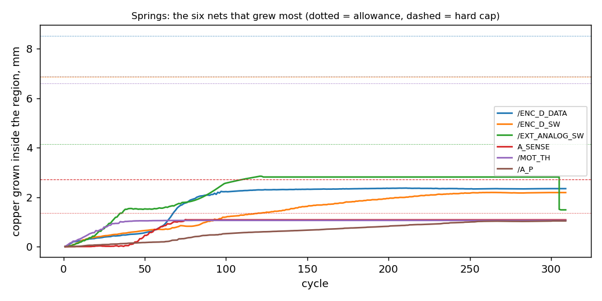
When progress (ghost scale plus target progress) has not improved for 40 cycles the run has stalled and the clamp set names the wall. Chains on that wall get an atomic reroute: A* on a 0.1 mm grid re-plans the chain between its current endpoints through the current geometry (ghosts stamped at full size so the corridor is pre-cleared), the chain is re-subdivided, and the same oracle verifies it, attachments included; a rejected route rolls back bit-perfectly and its blockers are stamped wider for the retry. A route that merely retraces the old path is a no-op and is retired. Each round is a topology-change checkpoint at unchanged progress: both neighbouring boards are legal, the rip happens between boards, never on one.
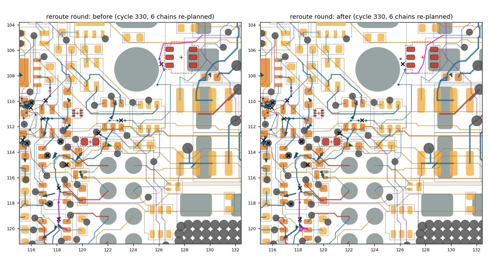
What is left after the last round is the honest residue, reported by unit and blocker: in the narrow run, pressure absorbed by J2's mounting pads and the board edge. That table is the input to the next decision: a different site, a hand reroute, or a board stretch.
Every checkpoint is emitted as a complete board in its own pcbnew process: the dynamic originals are stripped once, the deformed chains and vias are added back, moved parts sit at origin plus displacement, ghosts at full scale are placed as real footprints, zones refill. Then, in order: KiCad DRC at severity error with nothing new versus the checkpoint-0 baseline (footprint pairs keyed by name, copper by position, the project's excluded violations included); unconnected items not above baseline; every static copper object present byte for byte and every fixed footprint where it was; net growth inside the caps; and check_sync against the schematic on the final board.
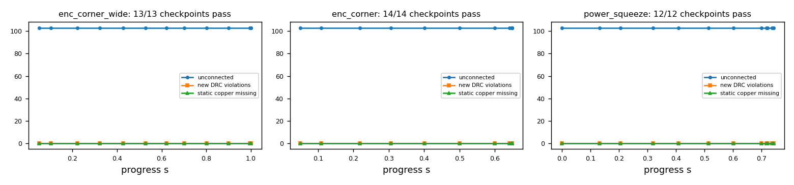
The same engine with a different drive. All four half-bridge bands were shoved 1 mm toward their centre line, with gate, bootstrap and turn-off nets capped at 0.3 mm of growth. The bands compressed until those caps held and the A-phase sense copper met the fixed INA240 outside the region. That is the power stage's internal vertical slack at the new rules with the loops kept short.
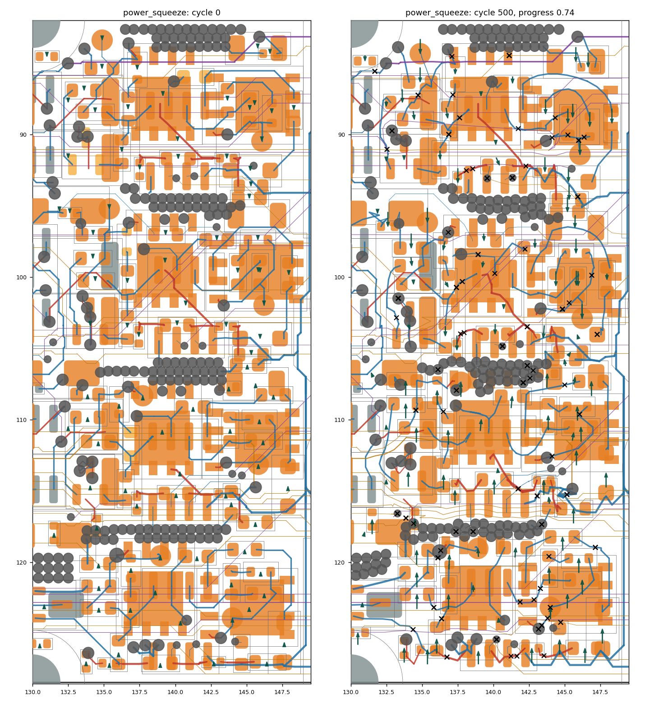
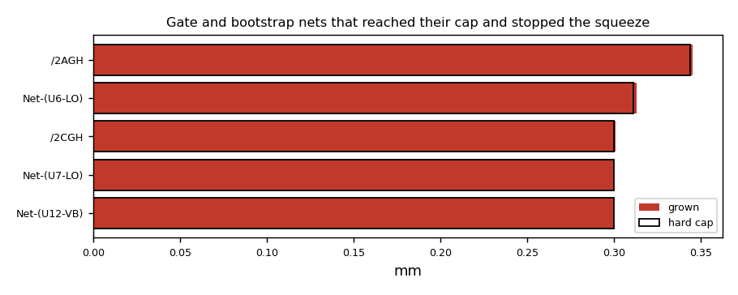
cap_mm).